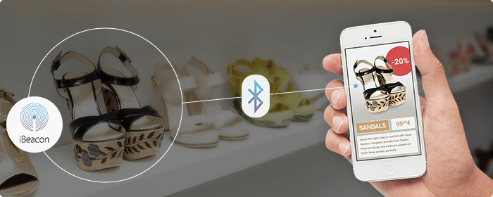
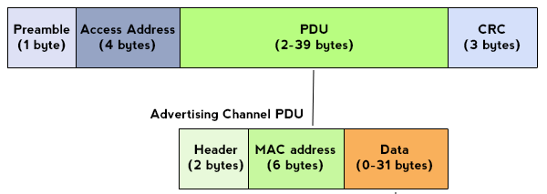
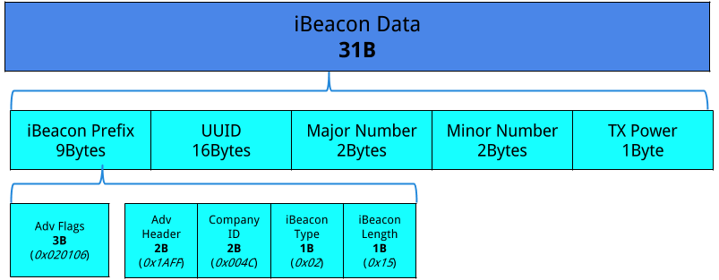
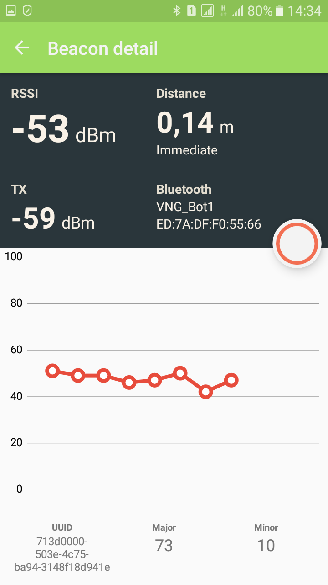

Những nét cơ bản về công nghệ Beacons
-
Về công nghệ Beacons nhiều bạn đã được nghe đến hoặc trực tiếp sử dụng nó. Vậy beacons là gì và lợi ích của nó ra sao. Sau đây mình sẽ giới thiệu những nét chính về công nghệ Beacons.
-
Beacon là thiết bị điện tử nhỏ phát ra tín hiệu Bluetooth năng lượng thấp (Bluetooth Low Energy - BLE). Bất kỳ thiết bị nào có công nghệ BLE đều có thể thu được tín hiệu này, chẳng hạn như điện thoại thông minh hay máy tính bảng.
-
Một thiết bị Beacon hoạt động như một “broadcasting device” - thiết bị chỉ quảng bá tín hiệu ra không gian. Điều này đồng nghĩa với việc các thiết bị BLE Central sẽ không thể kết nối đến thiết bị beacons. Thiết bị này hỗ trợ các thiết bị BLE khác nhau có thể đọc được thông tin từ Beacon tại cùng một thời điểm. Có thể xem thiết bị beacon như một ngọn hải đăng, một đèn báo hiệu để các thiết bị khác có thể dễ dàng nhận được một số thông tin cần truyền tải.

-
Đây là giao thức một chiều từ Beacon đến các thiết bị BLE mà không cần tạo một kết nối giữa hai thiết bị. Giống như công nghệ GPS, dựa vào cường độ tín hiệu BLE mà các thiết bị có thể xác định khoảng cách giữa Beacon và các thiết bị BLE xung quanh.
-
Beacon giải quyết các bài toán như: định vị trong tòa nhà, trung tâm thương mại - xác thực thanh toán (contactless payment) - lấy mã khuyến mại (checkin coupons) - quảng cáo thông minh (proximity marketing).
-
Đối với giáo dục, một số công ty đã áp dụng Beacon để phân tích hành vi sinh viên, hỗ trợ kết nối sinh viên và giáo viên từ đó chống được tỷ lệ drop-out.
-
Cấu trúc một gói tin Advertising của giao tiếp BLE được trình bày tại hình dưới:

-
Phân loại các chuẩn Beacons:
-
iBeacons của Apple
-
Eddystone của Google
-
AltBeacon của Radius Networks
-
v..v…
-
-
Phần tiếp theo trình bày cấu trúc phần user data và ý nghĩa các tham số quan trọng của chuẩn iBeacons và Eddystone. Các bạn có thể tìm hiểu các chuẩn beacons khác thông qua Internet.
iBeacons
- Hình dưới trình bày cấu trúc các byte dữ liệu trong thông tin mà iBeacons phát quảng bá ra môi trường. Một điểm chú ý là iBeacons chỉ sử dụng 30 / 31 byte dữ liệu của trường PDU Data trong gói tin BLE advertising.

-
Với iBeacons, Apple đã chuẩn hóa định dạng các gói tin quảng bá BLE. Theo định dạng này, với một packet quảng bá bạn cần quan tâm 4 thông tin chính sau:
-
UUID: Unique ID với độ dài 16 bytes (128 bit) được dùng để phân biệt giữa các nhóm sản phẩm với nhau. Ví dụ, nếu Coca-Cola có một mạng các beacons trong một chuỗi các cửa hàng thì các thiết bị beacons đi kèm sản phẩm của Coca-Cola nên có chung một giá trị UUID này.
-
Major: Có độ dài 2 byte được dùng để phân biệt một nhóm beacons nhỏ so với một nhóm lớn. Ví dụ, nếu Coca-Cola có bốn beacons trong một cửa hàng tạp hóa, cả bốn beacons này nên có cùng một Major. Điều này cho phép Coca-Cola biết chính xác cửa hàng mà khách đang ở trong đó.
-
Minor: Có độ dài 2 byte để định danh các beacons riêng biệt trong từng nhóm nhỏ. Trong ví dụ với Coca-Cola ở trên, có một beacons đặt ở phía trước cửa hàng mang một giá trị Minor độc nhất. Điều này cho phép ứng dụng đi kèm biết chính xác nơi mà khách hàng đang đứng
-
Tx Power: Được dùng để xác định khoảng cách đến beacon. Tx power được định nghĩa như độ mạnh của tín hiệu tại vị trí cách thiết bị beacons 1 mét. Các ứng dụng đi kèm có thể dùng điều này như một thông tin cơ bản để ước lượng khoảng cách từ sản phẩm (có beacons đi kèm) đến smartphone chạy ứng dụng.
-
-
Đọc thêm về iBeacon
https://developer.apple.com/ibeacon/
Eddystone
- Cấu trúc trường PDU data trong chuẩn Eddystone được trình bày ở hình dưới

Thông tin chi tiết về Eddystone các bạn có thể đọc tại ĐÂY
Thực hành phát iBeacons với bo mạch VBLUno51
- Các bạn có thể tham khảo mã nguồn ví dụ phát iBeacons cho bo mạch VBLUno51 có sẵn trong Arduino IDE:
File --> Examples --> BLE_Examples --> BLE_beacon
Một số ghi chú:
- Đoạn code sau chứa nội dung gói dữ liệu quảng bá beacons
const static uint8_t beaconPayload[] = {
0x4C,0x00, // Company Identifier Code = Apple
0x02, // Type = iBeacon
0x15, // Following data length
0x71,0x3d,0x00,0x00,0x50,0x3e,0x4c,0x75,0xba,0x94,0x31,0x48,0xf1,0x8d,0x94,0x1e, // Beacon UUID
0x00,0x49, // Major
0x00,0x0A, // Minor
0xC5 // Measure Power
};
-
Các tham số quảng bá quan trọng:
-
LE_GENERAL_DISCOVERABLE: Cho phép discovery
-
MANUFACTURER_SPECIFIC_DATA
-
ADV_NON_CONNECTABLE_UNDIRECTED: Không hỗ trợ kết nối
-
ble.accumulateAdvertisingPayload(GapAdvertisingData::BREDR_NOT_SUPPORTED | GapAdvertisingData::LE_GENERAL_DISCOVERABLE);
ble.accumulateAdvertisingPayload(GapAdvertisingData::MANUFACTURER_SPECIFIC_DATA, beaconPayload, sizeof(beaconPayload));
ble.setAdvertisingType(GapAdvertisingParams::ADV_NON_CONNECTABLE_UNDIRECTED);
Kết quả demo:
- Sau khi biên dịch và nạp firmware cho VBLUno51, sử dụng một số phần mềm có tính năng đọc tín hiệu beacons trên smartphone để kiểm tra hoạt động của thiết bị beacons . Ở đây mình dùng phần mềm Beacon Scanner trên Android OS.


Video:
- Có thể thấy, bằng việc sử dụng VBLUno51 (và cả VBLUno52), bạn dễ dàng chế tạo thử nghiệm một thiết bị beacons áp dụng cho nhiều bài toán khác nhau.
Viết phần mềm chạy trên Android OS để thu tín hiệu iBeacons
Xem hướng dẫn tại video